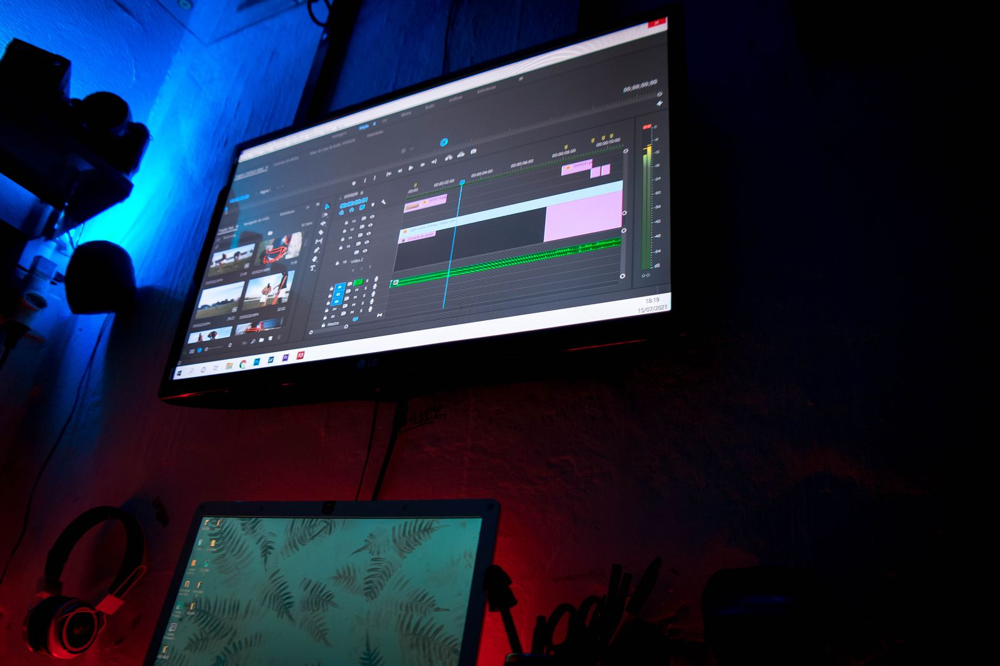
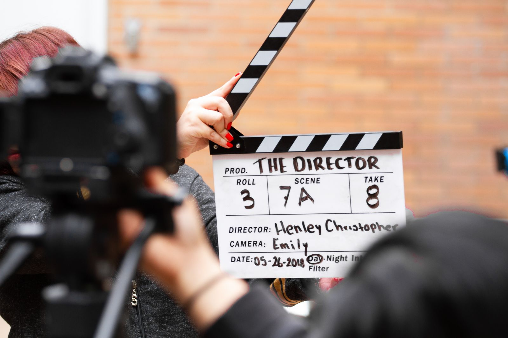

LOG 003 · THE TD
The person, then the plumbing.
Producers hire a supervisor twice: once for the eye, and once for what happens at 03:40 when the farm misbehaves. This page covers both — the route in, and the exact pipeline your production would be buying.
SEQ 010 · NOOR HADDAD — b. 1986, BEIRUT · BASED MONTRÉAL
Story
Noor Haddad came to particles the slow way: a physics degree she mostly used, two years as a runner and render wrangler she entirely used, then a decade of FX work across three Montréal studios before supervising her first full sequence in 2019.
The wrangling years are the biography that matters. Wranglers watch every way a render can die — dead nodes, corrupt frames, caches that pass review and fail in comp — and Noor kept the notebook. Particle Field, founded in 2021, is that notebook turned into a pipeline: checkpointed caches, sim sheets that can rebuild any version exactly, and bids written as tables a producer can defend in a production meeting.
The eye is the other half. Her wedges are known on two productions for ending arguments — not because they are beautiful, but because a wedge shown at the right scale, against the real plate, settles “more violent” into a number. She supervises every Class C shot personally and keeps the studio at one production at a time during finals, which is why the register shows two shows a year, not six.
Tools are Houdini first — pyro, FLIP, RBD, grains, Solaris/Karma for lookdev handoff — with Nuke on the receiving end and ftrack over all of it. She teaches a wedge-and-cache workshop for junior FX artists each winter; the waiting list is the only marketing the studio has ever needed.


SEQ 020 · DELIVERABLES & PIPELINE — THE TECHNICAL RIDER
What you receive, and on what terms.
| Deliverables | Sim caches (.bgeo.sc / OpenVDB) with full attribute sets, EXR plates rendered to your comp spec, and the sim sheet for every shot — parameters, seeds, versions, dependencies. |
|---|---|
| Software | Houdini 20.5 (pyro, FLIP, RBD, grains), Solaris / Karma XPU for element renders, Nuke for slap-comp checks. Scenes delivered in the same versions they were built in — no silent upgrades mid-show. |
| Colour | ACES 1.3 with OCIO configs matched to your pipeline; element passes supplied linear, viewing LUTs agreed at wedge stage. |
| Farm | 24 in-house nodes (512 GB RAM class) for production work; vetted burst capacity for finals week, included in Class C bids. Caches checkpointed every 20 frames and checksummed on completion. |
| Review | ftrack with frame-accurate notes; versions posted daily by 09:00 your time zone. Note turnaround 4 working hours in production, 1 hour in finals week. |
| Support | During finals, on-call cover runs to 23:00 Montréal time, seven days, until your last shot finals. The 03:40 rule: any farm failure is reported to the producer by 08:00 with cause, loss and recovery — before dailies, not during them. |
| Licensing | Delivered caches and plates are yours for the production in perpetuity. The underlying solver rigs and wedge setups remain Particle Field's — the same split as a stage mechanic's tools versus the car. Pickup shots within the archive window rebuild from the sim sheet at the original class rate. |
| Archive | All caches, scenes and sim sheets archived for 24 months from final delivery, two copies, one off-site. Retrieval within 3 working days, no fee inside the window. |
SEQ 030 · FOR PRODUCERS — BEFORE YOU WRITE
What a bid needs from you.
A per-shot bid can be turned around in one working day when these are in the email. Missing items don't block a bid — they turn it into a range, and ranges help nobody in a production meeting.
- The boards or previs for every shot with an effect in it — phone photos of boards are fine.
- Frame ranges and handles per shot, and the delivery resolution and colour pipeline.
- Plate status — shot, shooting, or planned — and any practical elements already captured.
- The two dates that matter: when finals start, and when delivery is actually immovable.
- Review cadence — who gives notes, in what tool, and who can say “final” out loud.
- What “done” means for elements: caches, rendered plates, or both — it changes the price by a real margin.
Send the boards. Get the table.
The bid comes back as a per-shot table with classes, versions and cache estimates — the same format as the pipeline sheet above.